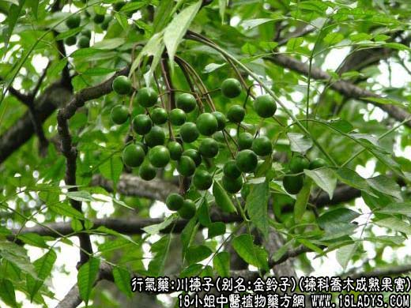
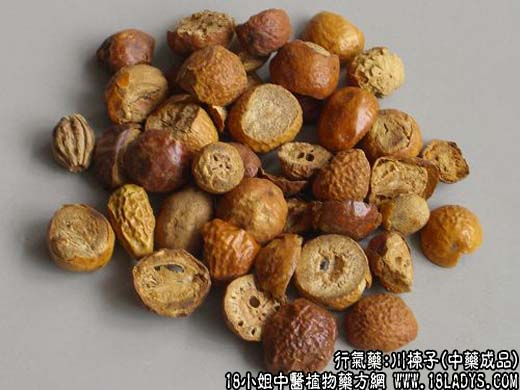

【中药概述】
川楝子，别名：楝实、练实、金铃子、仁枣、楝子、苦楝子、石茱萸、楝树果、川楝树子、川楝实，为楝科乔木植物川楝或楝的成熟果实。苦，寒；有小毒。归肝、胃、小肠、膀胱经。
1．行气止痛：用于肝郁气滞的胸胁脘腹疼痛，小肠疝痛、睾丸肿痛之属热者，如（活法机要<金铃子散>川楝子，延胡索）。
2．杀虫：用于虫积腹痛，蛔虫、蛲虫等，常配槟榔，使君子同用，如<安虫散>；外用治头癣。
【药物形态】
本品呈类球形，直径2～3.2cm。表面金黄色至棕黄色，微有光泽，少数凹陷或皱缩，具深棕色小点。顶端有花柱残痕，基部凹陷，有果梗痕。外果皮革质，与果肉间常成空隙，果肉松软，淡黄色，遇水润湿显黏性。果核球形或卵圆形，质坚硬，两端平截，有6～8条纵棱，内分6～8室，每室含黑棕色长圆形的种子1粒。气特异，味酸、苦。
【药效鉴别】川楝子行气止痛力强，驱杀蛔虫力缓。主要用于肝郁气滞之胸胁腹痛及疝气疼痛等症。
【药理作用】对金黄色葡萄球菌、大肠杆菌和鸡胚病毒有抑制作用。
【化学成分】含楝素、生物碱、山柰碱、树脂、鞣质等。
【用量用法】3——10g，水煎服，或入丸散剂。外用适量。
【使用注意】脾胃虚寒者不宜。
【附】盐川楝子：苦、咸，寒，可引药下行，作用专于下焦，多用于腹痛、疝气疼痛。对于寒疝少腹胀痛，睾丸偏坠等症，常与小茴香、吴茱萸、广木香等同用。
本文解释权归介绍中草药名称的中药大全所有，本文地址：https://www.daquan.com/post/1983.html